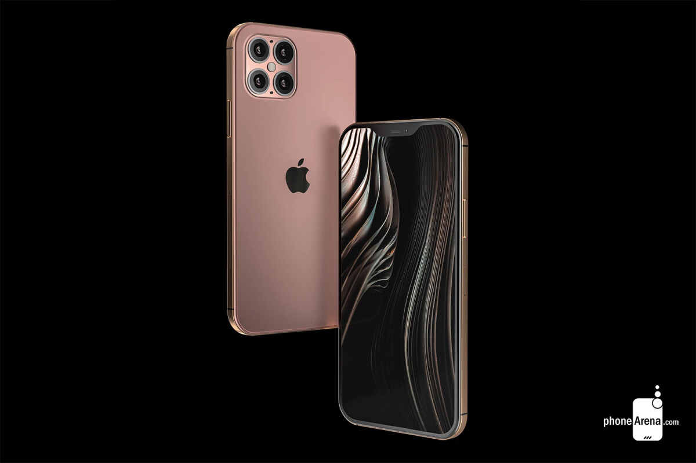

iPhone 12 Pro and iPhone 12 Pro Max
iPhone 12 Pro and iPhone 12 Pro Max-It’s a leap year
The iPhone 12 Pro Max, the largest model in Apple's iPhone 12 lineup, adds super-long battery life and a giant screen to the 12 Pro's excellent camera capabilities.Night mode comes to both the Wide and Ultra Wide cameras, and it’s better than ever at capturing incredible low-light shots. LiDAR makes Night mode portraits possible. And the Wide camera lets in 27% more light, for greater detail and sharper focus day or night.